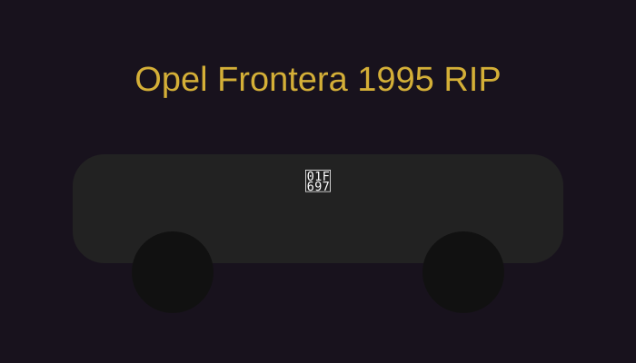
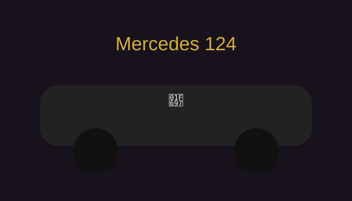
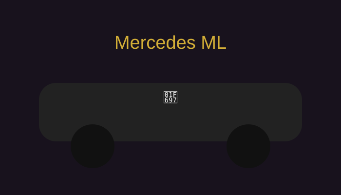

⚖️ СЪДЕБЕН СПОР
Петя ❤️ Теодор Илиев
Дело №26092019
📂 Доказателство №1
Господин Илиев, отговорете без помощ:
Къде и през коя година беше ПЪРВАТА ПЪРВА среща?
🗺️ Как стигнахме дотук
„Първата следа.“
„Историята става сериозна.“
„Разговори, спорове и втори шанс.“
Майка ти и баща ти
„Наблюдавахме случая от близо.“
„Идеите се раждат по-бързо от ремонта.“
🔨 Делото Гинци
Идеи: много
Спорове: още повече
Любов: много все още ❤️
Ремонти: безкраен сезон
🚗 Автомобилни доказателства

Opel Frontera 1995
RIP 🕊️
1995 - неизвестна дата
Служи вярно.
Премина през много.
Остана в историята.

Mercedes 124
Случай Левски.
Някои хора. Много напрежение.
И точно тогава 124-ката отказа да запали.
Но преживяхме и това.

Червен Mercedes ML
600 евро за ремонт: „Много са.“
600 евро за двигател: „Инвестиция.“
📘 Ръководство за живеене с Теодор
Версия 7.0
Инат: ██████████ 100%
Идеи: Безкрайни
Доверие към идеите на Петя: Първоначално ниско
Финален резултат: Обикновено е било добра идея
⚖️ ФИНАЛНО РЕШЕНИЕ
Жоро:
„След разглеждане на всички доказателства съдът се произнася.“
Теодор Илиев е признат за виновен.
✓ прекомерен инат
✓ много ремонти
✓ прекалено много идеи
✓ понякога ме побърква
✓ понякога не ми вярва
Но също така:
✓ остана
✓ построи този живот с мен
✓ мина през всичко това
🎆
Петя ❤️ Теодор
26.09.2019
7 години.
Много спорове.
Много идеи.
Много ремонти.
Делото продължава.
💛 Честита годишнина, дупе.
Обичкам си те много.